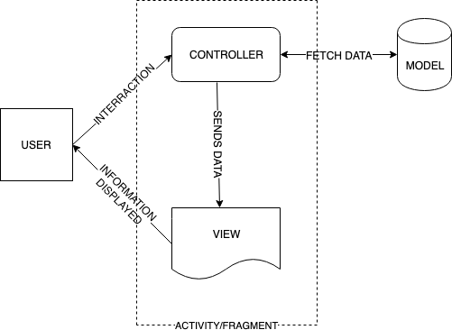
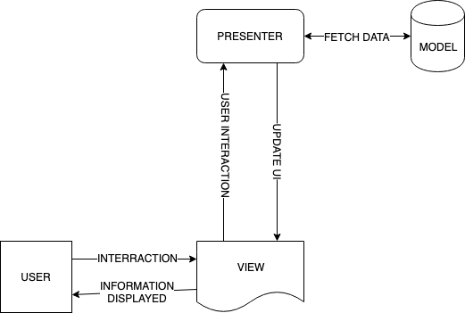
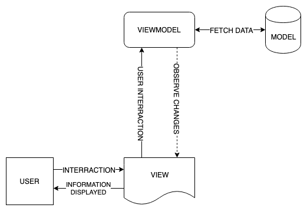
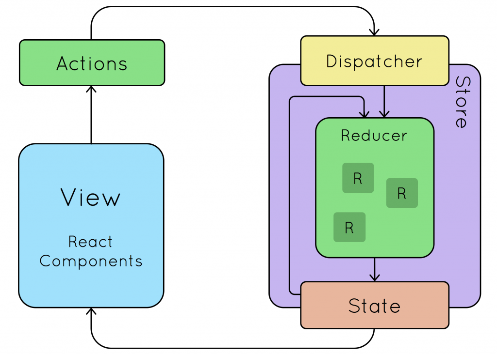

MVWTF: Demystifying Architecture Patterns
As an Android developer, one of the questions I constantly see asked within the community is “what architecture pattern should I use?”
This discussion usually leads to a handful of buzzwordy acronyms:
- MVC
- MVP
- MVVM
- MVI
- MVU?? (We don’t talk about this but apparently it’s the new kid on the block)
This can be really intimidating to new Android devs, as well as seasoned veterans who are constantly questioning if they’re using the right one. Whether you’re trying to decide which one to learn, or wondering if the one you already use is best for you, this post will help lead you to the right decision.
We should first start off by understanding why we even need architecture patterns. When that question is asked, we get even more buzzwords, saying we want code that is:
- Maintainable
- Extensible
- Robust
- Testable
At face value, these may not sound like buzzwords, but are often just filler. What does it mean to write maintainable code anyways? The word robust means strong and healthy. What is strong and healthy code?
We’re going to start at the beginning. Putting all of the buzzwords aside, we need to start with one single truth that is the basis for the rest of this post:
You can’t put all of your code in the Activity.
Implicitly we all know this, and we put our code into separate files. However, it’s more than just putting various classes into their own file. How we decide to break apart our code is very important, and that process is what architecture patterns are for. An architecture pattern is the way of describing how you split up your code.
Let’s work through some options we have for splitting up our code by tackling the list of acronyms from the beginning, starting at the top.
Model-View-Controller
MVC deserves a quick section simply because it’s one of the oldest architecture patterns. It was developed in the 1970s as a way to break up your application into three components: a model, a view, and a controller. It’s important to understand the function of each component.
Model
The model component is your data source. This can be a database, remote server, local text file, or anything else. The important thing to remember is that it does not care about the view.
Your model should not be responsible for any behavior related to how data is displayed, just retrieving it.
For example, if you want to fetch a user and display a label that has the username and age together, you will create that label elsewhere. Not inside the model component.
View
The view component is the visual representation of your data. That is all it is responsible for. It should not care where that data came from. The view should not be making any decisions. If you find yourself writing a conditional logic in your view component, consider refactoring that.
Controller
Being the last component, the controller is responsible for just about everything else. It should:
- Handle user input
- Validate that input if necessary
- Pass that input into the model
- Pass that model response into the view
An easy way to think about this flow is to consider a form. The controller reads all of your text inputs, makes sure you’ve filled everything out, sends it to the model, and then tells the UI to show a success screen.
MVC Diagram
Let’s take a look at how this all connects together:

Why Don’t We Use This On Android?
At face value, this looks pretty good. Our concerns are separated and the flow of information is pretty clear.
However, of all the patterns in this post, MVC is the one discussed the least on Android. There’s a quick explanation for this.

When you consider the responsibilities of a controller (accepting user inputs) and the responsibility of a view (displaying data), you may recognize that these are handled by the same thing in Android. This is your Activity or Fragment.
Why Is This Bad?
I’d like to highlight two reasons we wouldn’t want this on Android:
- We can’t write Junit tests for an Activity or Fragment, so we should move as much code out of there as we can.
- Our concerns aren’t actually separated if two of three components are in the same class.
How Do We Fix This?
Let’s move the controller/UI logic out of the Activity/Fragment.
Model-View-Presenter
By breaking the UI and business logic out of the Activity/Fragment, we create a slightly different flow of information. This creates the MVP pattern.

Now we have a separation of concerns where all of our non UI code is outside of the Activity/Fragment, and we can unit test all of it.
MVP Implementation
Before we move on to the next pattern, I think it’s important to understand a little bit about the implementation of a pattern like MVP, so we can compare how the code evolves along the way, too.
Contract Class
The first thing we need to do to build a feature in MVP is design a contract class that has the interfaces defining the behavior of our three components:
class TaskListContract {
interface View {
fun showTasks(tasks: List<Task>)
}
interface Presenter {
fun viewCreated()
fun viewDestroyed()
}
interface Model {
fun getTasks(): List<Task>
}
}
Model
Our model can be a simple in memory list for this example.
Notice that our model doesn’t actually reference other components.
class InMemoryTaskService : TaskListContract.Model {
override fun getTasks(): List<Task> {
return listOf(...)
}
}
View
The view really only needs to do two things here:
- Notify the presenter of any relevant life cycle methods, or click listeners if that was relevant
- Override any methods from our contract class to display data
Notice that our View only has a reference to the Presenter.
class TaskListActivity : AppCompatActivity(), TaskListContract.View {
private val presenter = TaskListPresenter(this, TaskRepository())
override fun onCreate(savedInstanceState: Bundle?) {
super.onCreate(savedInstanceState)
// ...
presenter.viewCreated()
}
override fun onDestroy() {
presenter.viewDestroyed()
super.onDestroy()
}
override fun showTasks(tasks: List<Task>) {
taskAdapter.tasks = tasks
}
}
Presenter
The presenter needs to override the methods from the contract class, call the view when necessary, and do any clean up required to avoid memory leaks (like removing a reference to the view).
Notice that our presenter has both a reference to the View, and a reference to the Model.
class TaskListPresenter(
private var view: TaskListContract.View?,
private val model: TaskListContract.Model
) : TaskListContract.Presenter {
override fun viewCreated() {
val tasks = model.getTasks()
view?.showTasks(tasks)
}
override fun viewDestroyed() {
view = null
}
}
Is This Good Enough?
- Our view is only responsible for displaying data
- Our model handles fetching data
- The presenter handles all inputs and UI logic
- Everything is well separated and everything is testable
- If you think this is good enough, use it!
What Is Different About MVVM?
Each architecture pattern in our original list leads into the next. MVP serves as a base for our discussion about MVVM, because there’s really only one nuanced difference between them: the presenter doesn’t need to care about the view.
Model-View-ViewModel
In the last pattern, we see that the presenter explicitly tells the view what to display. As an alternative, we can consider an event based approach where we just expose the state that our view should be in and anyone who needs to display that state can subscribe to those changes.
That’s exactly how MVVM works. It breaks the connection between the presenter and the view and instead exposes information via some observable type, like LiveData or RxJava.

MVVM Implementation
Let’s look at the code comparisons between implementing MVP and MVVM.
Model
The model component doesn’t actually change much. Since we no longer have a contract class, though, I still recommend setting up an interface for your data fetching behavior.
interface TaskRepository {
fun getTasks(): List<Task>
}
class InMemoryTaskService : TaskRepository {
override fun getTasks(): List<Task> {
return listOf(...)
}
}
View
The view behaves similarly to the last example, in that we need to:
- Create a reference to our ViewModel
- Observe changes from that ViewModel to update the UI accordingly
class TaskListActivity : AppCompatActivity() {
private val viewModel = TaskListviewModel(repository = InMemoryTaskService())
override fun onCreate(savedInstanceState: Bundle?) {
super.onCreate(savedInstanceState)
// ...
subscribeToViewModel()
}
private fun subscribeToViewModel() {
viewModel.getTasks().observe(this, Observer { tasks ->
adapter.tasks = tasks
})
}
}
ViewModel
Our ViewModel will look similar to the presenter, with a few key differences:
- We no longer have a reference to the view, only the model component
- We expose information via a LiveData object
- We can fetch information as soon as we initialize, so we don’t need to be notified of view creation
class TaskListViewModel(
private val repository: TaskRepository
) {
private val tasks = MutableLiveData<List<Task>>()
fun getTasks(): LiveData<List<Task>> = tasks
init {
fetchTasks()
}
private fun fetchTasks() {
tasks.value = repository.getTasks()
}
}
What Makes MVVM Better Than MVP?
Up to this point, our code looks exactly like it did before, minus a direct reference to the view. The benefit of dropping that connection is that now we can leverage Android’s ViewModel architecture component to help handle configuration changes better.
In MVP, our presenter had a reference to the view, which is often an Activity. If I rotate my phone, that activity is recreated, and now the presenter is referencing an Activity that no longer exists.
With a ViewModel, we have something that outlasts those configuration changes, and never has to lose state.
Handle Rotation in MVP
In MVP, we had to follow a lot of steps to handle rotation:
- Add two new methods to our presenters contract to
getState()andrestoreState() - Update our view to call those methods in the corresponding lifecycle steps
- Implement the methods to retrieve state and restore it in the presenter
Depending on how complicated your state is, step 3 can take a lot of time and require a lot of code.
Handle Rotation In MVVM
To make sure we easily handle rotation in MVVM, we do the following:
- Update our ViewModel to extend the Android ViewModel architecture component
- In our Activity, use ViewModelProviders to get the ViewModel that already exists
- Re-subscribe to the LiveData to get the state
The first two steps are the same level of effort as those in the previous section, but now we don’t have to think about saving and restoring state. We just need to re-subscribe to LiveData.
This saves us A LOT of time.
If you want to see the code comparisons there, please check out the slides from when this was post was given as a presentation.
Why Isn’t MVVM Good Enough?
As we work through these architecture patterns, each one sounds even better. Now we have all the separation and testability benefits of MVP, and we have better state management on rotation!
There’s still one more acronym in our list, though, which spoils the fun that MVVM isn’t the best we can do. To understand where it falls short, let’s look at a more complicated state.
Consider a feature that fetches a list of tasks and supports both a loading and an error state. You may try to put your state into some Kotlin sealed class:
sealed class TaskListState {
object Loading : TaskListState()
data class Loaded(val tasks: List<Task>) : TaskListState()
data class Error(val error: Throwable?) : TaskListState()
}
Next, you update your ViewModel to show the state according to what’s happening:
class TaskListViewModel(private val repository: TaskRepository) : ViewModel() {
init {
showLoading()
try {
fetchTasks()
} catch (e: Exception) {
showError()
}
}
private fun showLoading() {
state.value = TaskListState.Loading
}
private fun fetchTasks() {
val tasks = repository.getItems()
state.value = TaskListState.Loaded(tasks)
}
private fun showError() {
state.value = TaskListState.Error(Throwable("Unable to fetch tasks."))
}
}
This looks pretty good. There are some risks to the showLoading(), fetchTasks(), and showError() methods, though.
- Any methods in the class can call them
- We can’t guarantee they’re associated with a specific action or intent
- We have multiple methods manipulating our state that we have to ensure don’t conflict with each other
For a simple example like this one, MVVM may be fine. I can easily test everything to ensure I call these methods in the right order and avoid those risks. However, they would become more prevalent as our ViewModel gets more complicated. The next pattern works to solve that.
Model-View-Intent
Unlike the previous patterns, “Intent” doesn’t refer to some specific component, but rather the intention of doing something that we want to capture in our state.
Managing Predictable State Changes With A Reducer
The first problem with MVVM that we can tackle is the lack of predictable state changes. Instead of having multiple methods that manipulate our state, we should have one pipeline. This flow will take in some action, and a current state, and output a new state for us.
Here is what that method signature would look like:
abstract class Reducer {
abstract fun reduce(action: Action, state: State): State
}
If you are using a sealed class like we saw earlier to represent your state, we can have very clearly defined inputs and outputs:
class TaskListReducer : Reducer<TaskListState>() {
override fun reduce(action: Action, state: TaskListState): TaskListState {
return when (action) {
is TaskListAction.TasksLoading -> TaskListState.Loading()
is TaskListAction.TasksLoaded -> TaskListState.Loaded(action.tasks)
is TaskListAction.TasksErrored -> TaskListState.Error()
else -> state
}
}
}
If you’re not using sealed classes, we can also leverage the copy() methods from data classes to handle updating our state here as well:
class TaskListReducer : Reducer<TaskListState>() {
override fun reduce(action: BaseAction, state: TaskListState): TaskListState {
return when (action) {
is TaskListAction.TasksLoading -> state.copy(
isLoading = true,
isError = false,
tasks = null
)
is TaskListAction.TasksLoaded -> state.copy(
isLoading = false,
isError = false,
tasks = action.tasks
)
is TaskListAction.TasksErrored -> state.copy(
isLoading = false,
isError = true,
tasks = null
)
else -> state
}
}
}
Using A Store For A Single Source Of Truth
The other goal we want to accomplish with MVI is to have a single source of truth for our state. We can achieve this by creating a state container called a Store. It has the following responsibilities:
- The store maintains the reference to our current state
- The store holds the reference to our reducer
- The store is responsible for dispatching actions into the reducer to update the state
Here’s a quick snippet on how we can implement all of that. In this example I expose the state via some listener that gets called whenever it changes, but you can do this with RxJava, LiveData, etc.
class BaseStore<S : State>(
initialState: S,
private val reducer: Reducer<S>
) {
private var stateListener: ((S) -> Unit)? = null
private var currentState: S = initialState
set(value) {
field = value
stateListener?.invoke(value)
}
fun dispatch(action: Action) {
currentState = reducer.reduce(action, currentState)
}
fun subscribe(stateListener: ((S) -> Unit)?) {
this.stateListener = stateListener
}
}
This is better than what we had previously, because the state lives in one place only (the store) and can only be modified by one thing (the reducer). Not only do we get clearly defined inputs and outputs from this, but we are also able to get a unidirectional flow of data, as seen in this diagram from Esri:

Connect This To Our ViewModel Or Presenter
Note in the diagram that we have a component that dispatches actions. This can be anything, meaning you don’t need to be using MVVM to implement this flow. You can create a store and reducer and plug them into a presenter, too!
For this post, we’ll hook it up to a ViewModel. All we need to do is create a reference to the store, and where we were previously modifying state we will just dispatch actions to it:
class TaskListViewModel(private val repository: TaskRepository) : ViewModel() {
private val store: BaseStore<TaskListState> = BaseStore(
TaskListState.Loading(),
TaskListReducer()
)
// ...
private fun fetchTasks() {
store.dispatch(TaskListAction.TasksLoading)
try {
val tasks = repository.getTasks()
store.dispatch(TaskListAction.TasksLoaded(tasks))
} catch (e: Throwable) {
store.dispatch(TaskListAction.TasksErrored(e))
}
}
}
Recap
Wow! That was a lot to take in, and thanks for making it this far. Let’s TL;DR everything we just saw:
MVP is helpful because it separates our concerns and gives us code that is all junit testable. However, state management is unpredictable and rotation requires more work to support.
MVVM is a step forward, because we break the two way communication between the View and the Presenter allowing for better rotation support, but we still have unpredictable state management.
MVI takes us even further, by giving us predictable state management with clearly defined inputs and outputs.
So What Should I Use?
While it is clear that MVI is the strongest pattern we discussed, it’s not always right for everyone. If your feature is really complex and has confusing user flows, you can benefit a lot from having that predictable state management.
If your feature is simply fetching and displaying some data, though, the learning curve of MVI and extra code required might not be worth the effort. It’s up to you as a developer to decide how much complexity you need.
You certainly shouldn’t feel bad about using MVVM, and in fact in the majority of features I’ve built it works well for me.
Code Samples
Interested in seeing the implementation for a specific pattern? Check out this GitHub repository which has a sample app with a module for each architecture pattern.
If you have any questions, drop a comment below or reach out to me on Twitter! If you were inspired by any particular section and want to see a deeper dive into a specific pattern, let me know!